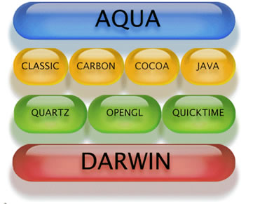

O Mac OS X possui a interface gráfica de usuário Aqua, que trouxe mais suavidade com o uso de bordas arredondadas, cores translúcidas e outros adereços com mais cores e texturas às janelas e controles do Desktop do que a interface da versão anterior, o Platinum do OS 9.
O núcleo é construído em torno de um kernel XNU com recursos básicos Unix acessíveis através de uma interface de linha de comando. Em cima foi projetado e desenvolvido um número de componentes de código fechado (closed source) de licença proprietária incluindo a interface Aqua e o Finder (o sistema de gerenciamento de arquivos).

Recurso Aqua e o núcle Darwin